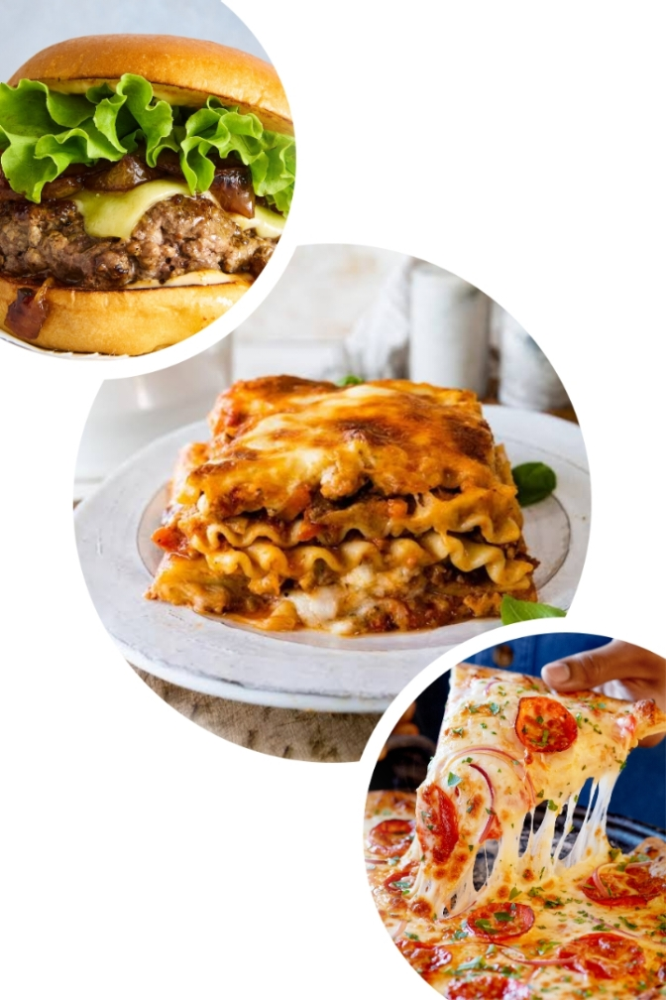

I’m about to break down three of my all-time favorite dishes — the burger, the pizza, and the lasagna. Each one is a masterclass in layering flavors, but in completely different ways. The burger is all about juicy, hand-held perfection with endless topping possibilities🤤. The pizza balances a crisp-chewy crust with the magic of melted cheese and just the right sauce😍. And the lasagna? That’s the ultimate comfort bake — hearty, saucy, and gloriously stacked. Let me tell you what makes each one unforgettable👍.